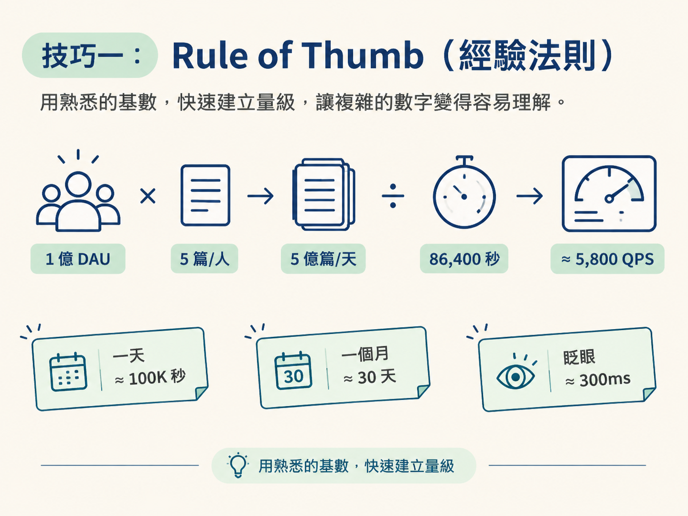
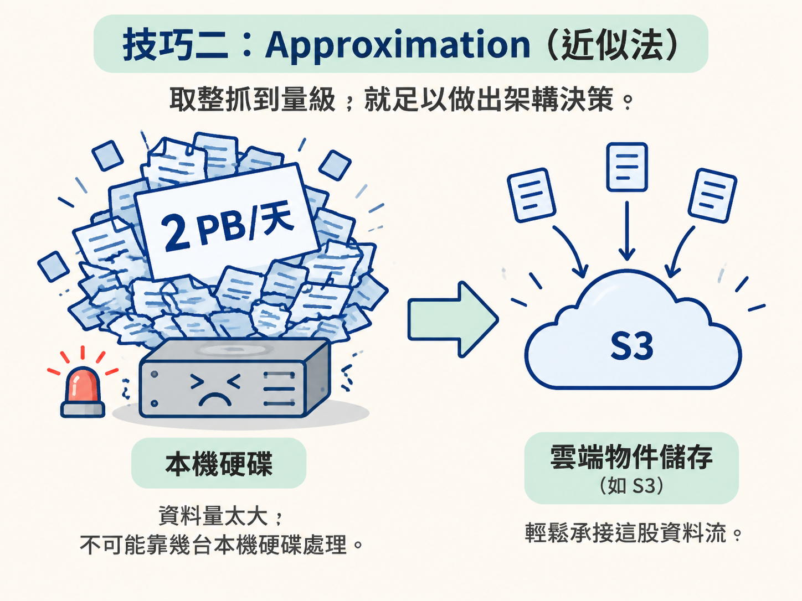
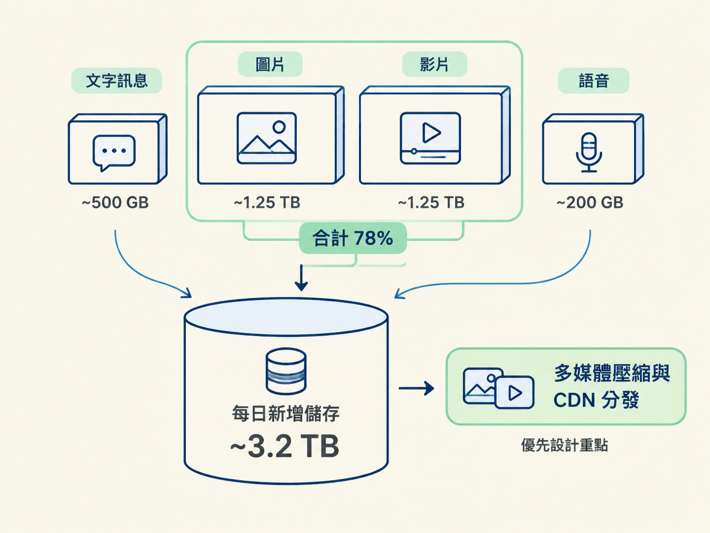
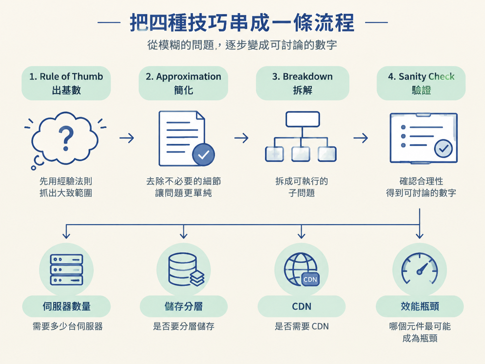

學習目標：掌握四種核心估算技巧——Rule of Thumb、Approximation、Breakdown and Aggregation、Sanity Check，並學會把它們組合起來使用。
上一課我們知道 BOE 估算為什麼重要：它能用一組簡單數字，幫助我們做出系統設計決策。不過，真正讓人卡住的通常不是「要不要估」，而是「眼前這個數字到底怎麼算出來？」
面試時，你沒有計算機，也不會隨手拿到完整的參考資料。你手上的工具，通常只有腦袋、白板，以及幾個熟悉的估算方法。以下四種技巧，就像工具箱裡的四把扳手：遇到不同形狀的問題，就換一把合適的工具。
| 技巧 | 一句話 | 使用時機 |
|---|---|---|
| Rule of Thumb | 用經驗法則找出基數 | 面試官沒有提供數字時 |
| Approximation | 取整，讓計算變簡單 | 數字太瑣碎、難以心算時 |
| Breakdown & Aggregation | 拆開估算，再加總 | 問題太複雜、無法一次算完時 |
| Sanity Check | 用常識檢查結果 | 完成計算之後 |
Rule of Thumb 是面試中很常用的起手式。它的重點不是假裝自己知道精確答案，而是用熟悉的經驗值建立一個合理起點。
這和你前面做 BOE 估算的關係很直接：當題目資訊不完整時，你不能停在「資料不夠，沒辦法算」，而是要先提出清楚的假設，讓後續討論有一塊可以踩的地板。
例如，題目是「設計一個社交媒體平台」，面試官只告訴你這是「大型系統」，卻沒有提供使用者數。你可以先這樣建立基數：
這些數字不需要一開始就精準到小數點。它們比較像是畫地圖時先標出主要道路：先讓方向正確，再視需要補細節。
1 億 DAU × 5 篇 = 5 億篇/天；再除以 86,400 秒，約等於 5,800 QPS。有了這個量級，你就能進一步討論儲存、讀寫比例、快取和資料庫分片等架構問題。

常用的 Rule of Thumb 參數：
• 一天 ≈ 86,400 秒 ≈ 100K 秒（取整方便）
• 一個月 ≈ 30 天
• 1 億 DAU 的讀取量級 ≈ 萬級 QPS
• 人類眨眼 ≈ 300ms（可作為感知延遲的基準）
Approximation 的核心就是取整。把難以心算、又不會影響架構判斷的細節先放一邊，保留最重要的量級。
例如：5 億用戶每天上傳 2 張照片，每張 2MB。精確計算會得到 2,000,000,000 MB/天，但在系統設計面試裡，你更需要快速掌握它大約落在哪個量級：
5 億 × 2 × 2MB
= 5 × 10^8 × 2 × 2 × 10^6
= 20 × 10^14 bytes
= 2 PB/天這裡的 2 PB/天不是一個需要精確到最後一位的答案，而是一盞警示燈：資料量大到不可能靠幾台本機硬碟處理，你會需要雲端物件儲存（如 S3）。至於實際結果是 1.8 PB 還是 2.2 PB，通常不會改變這個架構決策。

所以，Approximation 並不是偷懶，而是把力氣花在真正會影響設計的地方。就像估算搬家需要幾台貨車，你首先要知道是「一台」還是「一百台」，不必先數清楚每個紙箱裡的每一件物品。
當問題大到無法一次處理時，就把它拆成幾個小問題，各自估算後再加總。這是面對複雜系統時最實用的技巧之一。
假設你正在設計一個即時通訊系統，需要估算每天新增多少儲存量。與其直接猜一個總數，不如先按照資料類型拆開：
| 資料類型 | 估算 | 每天 |
|---|---|---|
| 文字訊息 | 5 億用戶 × 50 則 × 200 bytes | ~500 GB |
| 圖片 | 5 億 × 5 張 × 500 KB | ~1.25 TB |
| 影片 | 5 億 × 0.5 部 × 5 MB | ~1.25 TB |
| 語音 | 5 億 × 2 條 × 200 KB | ~200 GB |
| 合計 | ~3.2 TB/天 |
這種拆法的價值，不只在於得到總量：每天約 3.2 TB。更重要的是，你能看出誰才是主要的資料來源。圖片和影片合計佔了 78%，因此設計重點應該放在多媒體壓縮與 CDN 分發，而不是花大量時間優化文字訊息的儲存。

這也連回你之前做容量估算時的思路：總數字只是起點，真正能推動架構決策的，是知道哪一部分正在「吃掉」最多資源。
Sanity Check 是估算的最後一道防線。你算出一個結果後，不要立刻把它當成答案；先退一步，用常識、已知系統的量級，或題目中的其他條件檢查它是否站得住腳。
可以把它想成出門前照鏡子：不是重新打扮一次，而是確認衣服沒有穿反、鞋子沒有穿錯。
以下是幾個典型的 Sanity Check：
Sanity Check 的口訣：算完之後問自己——「這個數字跟我已知的世界一致嗎？」如果不一致，不是你算錯了，就是你漏了什麼。
實際面試時，這四種技巧不是四個互不相關的章節，而是一套可以連續使用的流程：
我們用一個完整例子把流程走一遍：設計一個類似 YouTube 的影片串流平台。
注意，這裡的每一步都不是為了算出「唯一正解」，而是把模糊的題目逐步變成可討論的數字。這些數字接著會幫助你判斷：需要多少伺服器、儲存是否要分層、是否需要 CDN，以及哪個元件最可能成為瓶頸。

四種估算技巧可以這樣記：
面試時，把它們串在一起，你就能在 2–3 分鐘內產出一組合理的容量數字。下一課會進一步介紹五種具體的估算類型——Load、Storage、Bandwidth、Latency、Resource，以及它們如何共同描繪出系統的「數字畫像」。